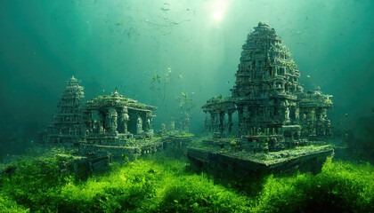

Dwarka, located on the western coast of Gujarat, holds immense religious significance as an ancient city associated with Lord Krishna, a central figure in Hinduism. According to mythology, Dwarka was the capital of Lord Krishna's kingdom and is considered one of the seven most sacred cities (Sapta Puri) in Hinduism. The city is home to the Dwarkadhish Temple, dedicated to Lord Krishna, which stands as a magnificent example of Hindu temple architecture. Pilgrims flock to Dwarka to offer prayers and seek blessings, immersing themselves in the divine aura of this historic city steeped in legend and lore.
Sudama Setu Bridge is a stunning suspension bridge built for pedestrians to cross River Gomti. The bridge was named after Sudhama, Lord Krishna's childhood friend. It was inaugurated by Anandiben Patel, the CM of Gujarat in 2016. Sudhama Setu connects the ancient Jagat Temple and the sacred Panchkui Teerth on the island which is associated with the legendary Pandava brothers. Besides mythology, the bridge is also famous for a breathtaking view of the river and the Arabian Sea. There are ample seating arrangements here to enjoy the view.
Nageshwar Temple situated in Dwarka is one of the 12 Jyotirlingas in India. It is located on the route between Gomati Dwarka and the Bait Dwarka Island on the coast of Saurashtra in Gujarat. Also sometimes known as Nagnath Temple, the main deity here is Lord Shiva, also known as Nageshwar Mahadev. According to the Shiva Purana, those who pray at the Nageshwar Jyotirlinga become free from all poisons, snake bites and worldly attractions. Unlike other Nageshwar Temples, the statue or the Linga here faces south. A major highlight of Nageshwar Temple is the massive 80 feet tall statue of Lord Shiva. The temple itself is characterised by typical Hindu architecture. The Nageshwar Shiva Linga is made up of stone, known as Dwarka Shila, having small chakras on it. It is in the shape of 3 mukhi Rudraksha
An ancient tale of separation, the Rukhmini Devi Temple is located about 1.5 km from the Dwarka city centre. This 12th-century remnant carries out some evident architectural marvels of the time through its mural carvings and other structures.The Hindu mythical story behind this temple begins with Rukhmini Devi and her husband Lord Krishna, picking up the sage Durvesha for dinner. On the way, Rukhmini Devi stopped to quench her thirst at the Ganges, with the help of her husband.Known to be short-tempered, Durvesha Muni was quite enraged when she did not offer him any water. Thus he summoned Rukhmini Devi to be separated from Lord Krishna. Therefore, her temple lies at the outskirts, while Lord Krishna's temple is within the Dwarka city.
Contact us:xxxxxxxxx
Email:youme1211@gmail.com